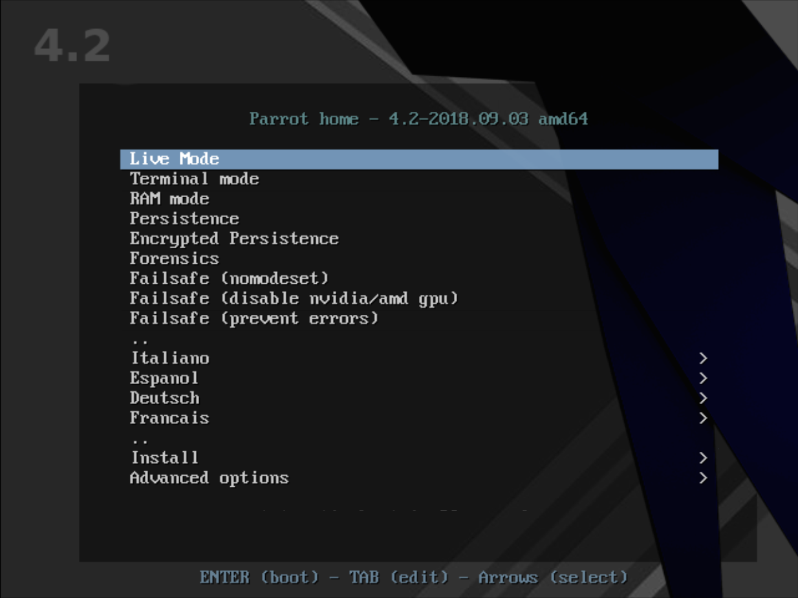

First contact with the system
I have a Parrot USB or DVD, now what?
If you properly followed the precedent tutorial, then you have a bootable USB drive or DVD.
These storage supports can be used as boot devices to start the computer with the Parrot live environment.
Every computer firmware is different, and an unique omnicomprehensive tutorial to boot an external system from USB just does not exist.
It is your responsibility to know how your own computer works and how to change boot device on it.
Once you booted the system from the USB device you can choose many ways to boot the system from the Parrot Live Boot Menu.
Live Mode and Installer
The Parrot Boot Menu can let you install the system on your computer, or start it in Live Mode.
The live mode is a special boot mode offered by many linux distributions, including Parrot OS, which allows the users to load a fully working linux environment without the need to install it.
This is possible because the system is not loaded onto the system's hard drive, instead it is loaded into memory.

Parrot OS offers the ability to install the OS while in the live environment offers the ability to test the system without interfering with the computer's hard drive.